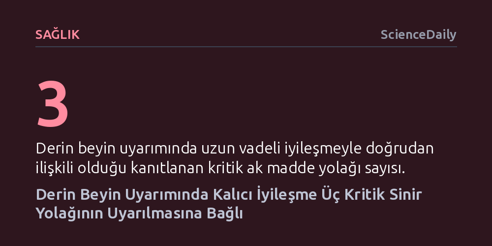

SAGLIK · ScienceDaily · 2026-10-19
Tedaviye dirençli depresyonda derin beyin uyarımının kalıcı sonuç vermesi, elektrotların üç kritik ak madde yolağını eş zamanlı uyarmasına dayanıyor. İki yıl sonunda iyileşmeyen hastalarda özellikle sol singulum demetinin elektriksel temastan mahrum kaldığı saptandı.
Depresyon cerrahisinde elektrotların beynin genel bir bölgesine yerleştirilmesinin yetmediğini; kalıcı iyileşme için milimetrik hassasiyetle doğru sinir ağı yollarının uyarılması gerektiğini kanıtlıyor.

Major depresyon yaşayan birçok hasta için antidepresan ilaçlar ve psikoterapi bir çıkış yolu sunsa da hiçbir geleneksel tedaviye yanıt vermeyen geniş bir hasta grubu bulunuyor. Tedaviye dirençli depresyon olarak tanımlanan bu tabloda hastalar, yıllar süren ağır bir çöküşle ve yaşam kalitesini tamamen yok eden semptomlarla mücadele ediyor. Bu noktada deneysel bir cerrahi yöntem olan derin beyin uyarımı (DBS), beynin duygu durumunu düzenleyen devrelerine implante edilen elektrotlarla sürekli ve kontrollü elektriksel sinyaller göndererek hastalara yeni bir umut vadediyor.
Ne var ki derin beyin uyarımının klinik başarısı uzun süredir büyük bir soru işaretini de beraberinde getiriyordu. Beynin subkallozal singulat bölgesine neredeyse tamamen aynı anatomik konumlarda elektrot yerleştirilen iki hastadan biri yıllar süren kalıcı bir iyileşme gösterirken, diğeri hiçbir fayda görmeyebiliyordu. Bu durum, cerrahların sadece hedeflenen genel bölgeyi bulmasının yeterli olmadığını, elektrotların ürettiği elektrik alanının gerçekte hangi bağlantılara temas ettiğinin belirleyici olduğunu gösteriyordu.
Mount Sinai Tıp Fakültesi liderliğinde yürütülen ve American Journal of Psychiatry dergisinde yayımlanan kapsamlı araştırma, bu klinik belirsizliğe ışık tutuyor. Araştırmacılar, yöntemin ilk geliştirildiği Toronto Üniversitesi kohortunu ve BROADEN klinik denemesini de içeren, bugüne kadar bir araya getirilmiş en geniş bağımsız hasta gruplarını inceledi. Elektrotların yarattığı elektriksel alanların bilgisayar modellemeleri ile hastaların beyin bağlantı haritaları eşleştirilerek, hangi sinir yollarının uyarıldığı tek tek tespit edildi.
Elde edilen bulgular, elektriksel uyarımın yalnızca elektrotun hemen bitişiğindeki dokuyu etkilemediğini gösterdi. Uyarılar, tıpkı geniş bir otoyol ağı gibi beynin farklı bölgelerini birbirine bağlayan ak madde lifleri üzerinden geniş ağlara yayılıyordu. Uzun vadeli ve kalıcı iyileşme sağlayan tüm hastalarda elektrik akımının istikrarlı biçimde üç kritik yolağa ulaştığı belirlendi: singulum demeti, forseps minör ve medial unsinat fasikül/ventral amigdalofugal yolaklar. Bu üçlü bağlantı eksiksiz uyarıldığında, depresyonda işlevi bozulan duygusal devreler yeniden dengeye kavuşuyordu.
Araştırmanın en dikkat çekici sonucu, tedaviden fayda görmeyen hastaların verileri derinlemesine incelendiğinde ortaya çıktı. İki yıllık takip süresi sonunda durumunda düzelme kaydedilmeyen hastaların tamamında ortak ve belirgin bir uyarım açığı saptandı: Sol singulum demeti hedeflenen uyarımı yeterince alamamıştı. Cerrahi açıdan elektrot doğru genel anatomik alana yerleştirilmiş olsa bile, milimetrik bir sapma bu kritik bağlantının uyarım menzilinin dışında kalmasına sebep olmuştu.
Bu tespit, elektrotların yerleşiminde klasik kaba anatomik sınırlara güvenmenin neden yetersiz kaldığını açıklıyor. Depresyon gibi yaygın beyin ağlarını ilgilendiren bir rahatsızlıkta, birkaç milimetrelik yerleşim farkı elektrotun doğru sinir yolağına bağlanıp bağlanamayacağını belirliyor. Araştırmacılar elektrotları kaydırmanın bu hastalarda iyileşme sağlayıp sağlamayacağını henüz doğrudan test etmemiş olsa da aradaki fark, görünürde benzer cerrahi müdahalelerin neden tamamen zıt sonuçlar doğurduğunu açık bir mekanizmaya kavuşturuyor.
Elde edilen bulgular, derin beyin uyarımı cerrahisinde standart anatomik referanslardan 'konnektom temelli hedefleme' yaklaşımına geçişin önemini pekiştiriyor. Bu stratejide cerrahlar, genel anatomik şablonlar yerine hastaya özgü beyin bağlantı haritalarını kullanarak elektrotları doğrudan bu üç ak madde yolağının kesişim noktasına yerleştiriyor. Nitekim bu haritalama yöntemi, Abbott TRANSCEND adlı randomize ve kontrollü klinik çalışmada şimdiden kılavuz olarak kullanılmaya başlandı.
Bununla birlikte uzmanlar, doğru elektrot yerleşiminin başarı için kritik bir ilk adım olduğunu fakat tek başına mucize yaratamayacağını hatırlatıyor. İlerleyen süreçte her hastanın kendine has sinirsel yapısına göre elektriğin genlik, frekans ve atım genişliği gibi ayarlarının nasıl optimize edileceğinin ve hangi hastaların bu tedaviden en çok faydalanacağının netleştirilmesi gerekiyor. Yine de bu keşif, dirençli depresyonu kişiye özel hassas tıp yöntemleriyle alt etme yolunda çok güçlü bir kilometre taşı sunuyor.